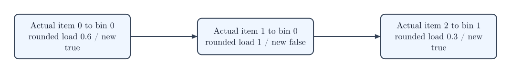
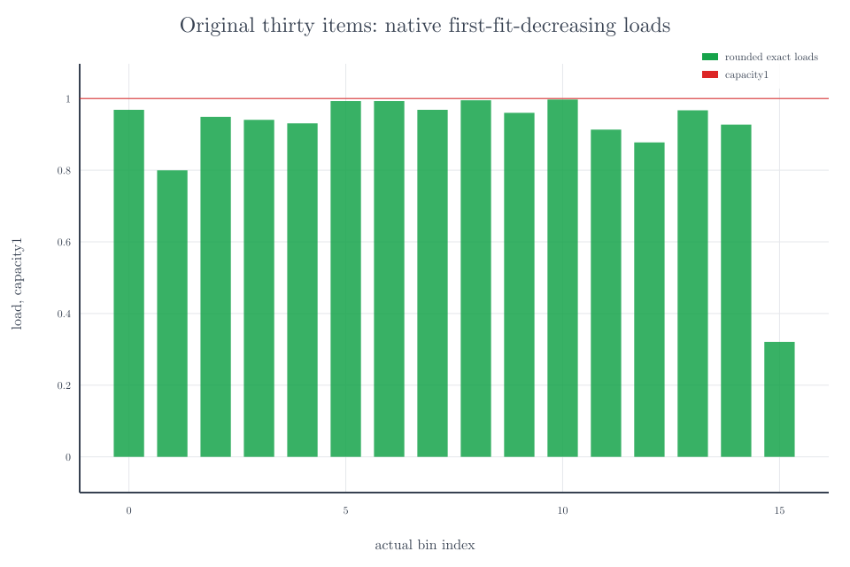
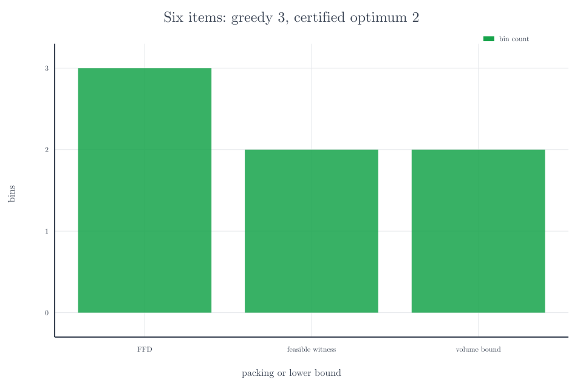
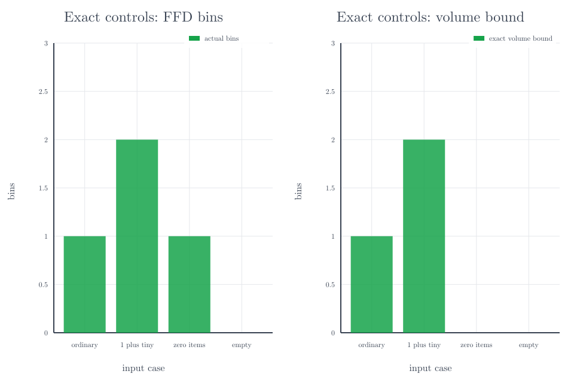

First-fit-decreasing bin packing
Abstract
Assign items to fixed-capacity bins while using as few bins as possible. First-fit-decreasing sorts large items first and greedily reuses the earliest feasible bin. We inspect actual admission tests, retain the original thirty-item experiment, prove a small counterexample needs fewer bins than the heuristic chooses, and use exact binary64 capacity arithmetic to avoid tolerance-induced overfilling.
Feasible packing and a volume lower bound
Each original item must appear in exactly one bin, and the sum of its bin's sizes must not exceed the positive capacity C. First-fit-decreasing processes items in nonincreasing size order, tests existing bins in creation order and opens a new bin only when none fits. Equal-size identity order follows the implementation's native sort. A placement preserves feasibility because only a successful capacity comparison permits admission.
If total size is S and a feasible packing has B bins, then S is at most B*C, hence the optimum is at least ceil(S/C). This volume bound can be loose: it ignores which individual items fit together. If a feasible packing attains it, however, that packing is optimal. Nonempty zero-sized items still need assignment to a bin; their zero volume gives only the loose lower bound zero.
The native producer now sums finite nonnegative binary64 values exactly with fixed dyadic integer accumulators. Capacity comparisons and the integer volume ceiling therefore use the supplied numbers exactly, without the old absolute1e−12 allowance or rounded-load admission. Presentation loads are correctly rounded to double only after a successful exact placement. This is exact arithmetic on the supplied binary64 values, not a claim that a typed decimal fraction has its ideal decimal value.
Three items and actual first-fit decisions
With capacity one, sizes0.6,0.4,0.3 place the first two together and open a second bin for0.3. The first pair sums exactly to one for these binary64 values. Actual trial records report whether the exact candidate sum is below, equal to or above capacity, while placement records retain the selected bin and rounded load. The diagram reads those real placements.
#include <dm/dm.hpp>
int main() {
std::filesystem::create_directories("build");
auto t = dm::algorithms::nesting_trace({.6, .4, .3}, 1);
dm::graphics::Diagram d;
std::print("| original item | tested existing bin | rounded prior load | actual exact comparison | fits " "|\n| ---: | ---: | ---: | ---: | --- |\n");
for (auto &r : t.trials)
std::print("| {} | {} | {} | {} | {} |\n", r.item, r.bin, r.load_before,
r.comparison, r.fits);
for (std::size_t i = 0; i < t.placements.size(); ++i) {
auto &r = t.placements[i];
auto id = std::to_string(i);
d.node(id, {6.0 * i, 0},
std::format("Actual item {} to bin {}\nrounded load {} / new {}",
r.item, r.bin, r.load_after, r.opened));
if (i)
d.edge(std::to_string(i - 1), id);
}
std::print("\nActual bins: {}. Exact volume lower bound: {}.\n",
t.analysis.result.bins, t.analysis.volume_lower_bound);
d.save_svg("build/nesting_tiny.svg");
}| original item | tested existing bin | rounded prior load | actual exact comparison | fits |
|---|---|---|---|---|
| 1 | 0 | 0.6 | 0 | true |
| 2 | 0 | 1 | 1 | false |
Actual bins: 2. Exact volume lower bound: 2.

Retain the original thirty-item generator
The original thirty sizes come from a32-bit wrapping linear congruential stream starting at12345 and the mapping0.15+(state modulo1000)/1000 times0.7. This generator now lives in the library. The figure shows actual rounded loads after native exact admission, alongside the capacity-one reference. The table preserves every original item identity in its assigned bin.
The exact volume lower bound and actual bin count are reported separately. Equality would certify optimality; a gap alone does not prove either that the heuristic is suboptimal or that the lower bound is attainable. No real dataset is forced into this synthetic packing example.
#include <dm/dm.hpp>
int main() {
std::filesystem::create_directories("build");
auto sizes = dm::algorithms::nesting_demo_sizes();
auto a = dm::algorithms::nesting_analyze(sizes, 1);
std::vector<double> x;
std::print("Actual items: {}. Bins: {}. Exact volume lower bound: {}. Feasible certificate: {}.\n\n| " "bin | rounded exact load | original item IDs |\n| ---: | ---: | --- |\n",
sizes.size(), a.result.bins, a.volume_lower_bound,
dm::algorithms::nesting_feasible(sizes, 1, a.result.assignment));
for (std::size_t i = 0; i < a.result.loads.size(); ++i) {
x.push_back(i);
std::print("| {} | {} |", i, a.result.loads[i]);
for (auto id : a.result.assignment[i])
std::print(" {}", id);
std::print(" |\n");
}
auto p = dm::graphics::RPlot::create();
p.bars(x, a.result.loads, "actual rounded loads", {22, 163, 74}, .7).abline_h(1, {220, 38, 38}, 1).legend({"rounded exact loads", "capacity1"}, {{22, 163, 74}, {220, 38, 38}}).title("Original thirty items: native first-fit-decreasing loads").x_label("actual bin index").y_label("load, capacity1").save_svg("build/nesting_original.svg");
}Actual items: 30. Bins: 16. Exact volume lower bound: 15. Feasible certificate: true.
| bin | rounded exact load | original item IDs |
|---|---|---|
| 0 | 0.9684999999999999 | 23 28 |
| 1 | 0.7996 | 14 |
| 2 | 0.9489 | 11 12 |
| 3 | 0.9405 | 6 21 |
| 4 | 0.9307 | 4 29 |
| 5 | 0.9929999999999999 | 9 17 |
| 6 | 0.9929999999999999 | 18 20 |
| 7 | 0.9684999999999999 | 27 8 |
| 8 | 0.9950999999999999 | 19 26 |
| 9 | 0.9601 | 15 24 |
| 10 | 0.9971999999999999 | 3 1 |
| 11 | 0.9131999999999999 | 2 22 |
| 12 | 0.8775 | 13 0 |
| 13 | 0.9671 | 16 5 |
| 14 | 0.9272 | 25 7 |
| 15 | 0.3208 | 10 |

A complete optimality counterexample
For sizes0.4,0.4,0.3,0.3,0.3,0.3, first-fit-decreasing uses three bins: the two0.4 items together, three0.3 items together, then the last0.3 alone. Yet two bins each containing0.4+0.3+0.3 are feasible. The native certificate checker verifies the explicit original-ID assignment, while the exact total volume is two and its lower bound is two. Therefore the optimum is exactly two and this heuristic result is strictly suboptimal.
The witness is supplied openly; no hidden exhaustive solver or report-side packing algorithm generates it. The example explains why descending order and first fit are a heuristic, even with exact arithmetic. A general approximation theorem requires a separate proof; this finite example establishes only its stated optimum and failure of exact optimality.
#include <dm/dm.hpp>
int main() {
std::filesystem::create_directories("build");
std::vector<double> s{.4, .4, .3, .3, .3, .3};
std::vector<std::vector<int>> witness{{0, 2, 3}, {1, 4, 5}};
auto a = dm::algorithms::nesting_analyze(s, 1);
bool feasible = dm::algorithms::nesting_feasible(s, 1, witness);
std::print("| native FFD bins | supplied witness bins | native witness feasible | exact volume lower " "bound |\n| ---: | ---: | --- | ---: |\n| {} | {} | {} | {} |\n",
a.result.bins, witness.size(), feasible, a.volume_lower_bound);
auto p =
dm::graphics::RPlot::barplot({double(a.result.bins),
double(witness.size()),
double(a.volume_lower_bound)},
{"FFD", "feasible witness", "volume bound"},
"bin count");
p.title("Six items: greedy 3, certified optimum 2").x_label(
"packing or lower bound").y_label("bins").save_svg(
"build/nesting_counterexample.svg");
}| native FFD bins | supplied witness bins | native witness feasible | exact volume lower bound |
|---|---|---|---|
| 3 | 2 | true | 2 |

Why an absolute epsilon changes the problem
Let epsilon be the smallest positive binary64 value. Items1 and epsilon cannot share a capacity-one bin: their exact sum is greater than one. Rounded double addition loses epsilon, and the old capacity+1e−12 comparison would also admit it. The corrected producer uses two bins and returns the exact volume lower bound two, even though ordinary printed totals could look like one.
The controls below also include zero-sized and empty inputs. Capacity must remain finite and strictly positive; every size must be finite, nonnegative and at most capacity. Oversized, negative and nonfinite items are rejected before sorting/packing. Signed zero is allowed. Int-sized original IDs bound the input count. The fixed2176-bit dyadic accumulators cover every possible sum under that count bound; this is not an arbitrary-precision dependency or a changed input type.
#include <dm/dm.hpp>
int main() {
std::filesystem::create_directories("build");
auto tiny = std::numeric_limits<double>::denorm_min();
std::vector<std::vector<double>> cases{{.6, .4}, {1, tiny}, {0, 0}, {}};
std::vector<std::string> labels{"ordinary", "1 plus tiny", "zero items",
"empty"};
std::vector<double> bins, bounds;
std::print("Smallest positive binary64 item: {:.17g}.\n\n| case | actual FFD bins | exact volume bound " "| native certificate feasible |\n| --- | ---: | ---: | --- |\n",
tiny);
for (std::size_t i = 0; i < cases.size(); ++i) {
auto a = dm::algorithms::nesting_analyze(cases[i], 1);
bins.push_back(a.result.bins);
bounds.push_back(a.volume_lower_bound);
std::print("| {} | {} | {} | {} |\n", labels[i], a.result.bins,
a.volume_lower_bound,
dm::algorithms::nesting_feasible(cases[i], 1,
a.result.assignment));
}
auto p = dm::graphics::RPlot::barplot(bins, labels, "actual bins");
p.title("Exact controls: FFD bins").x_label("input case").y_label("bins").y_limits(0, 3);
auto q = dm::graphics::RPlot::barplot(bounds, labels, "exact volume bound");
q.title("Exact controls: volume bound").x_label("input case").y_label(
"bins").y_limits(0, 3);
dm::graphics::RLayout::create(1, 2).add(p).add(q).fit_panels().save_svg(
"build/nesting_precision.svg");
}Smallest positive binary64 item: 4.9406564584124654e-324.
| case | actual FFD bins | exact volume bound | native certificate feasible |
|---|---|---|---|
| ordinary | 1 | 1 | true |
| 1 plus tiny | 2 | 2 | true |
| zero items | 1 | 0 | true |
| empty | 0 | 0 | true |

Cost, capture contract and conclusion
The explicit scan costs O(n log n+n squared) fixed-width operations and O(n) driver/output storage. The trace records actual bin comparisons and selected placements without replay. Its logical units are capacity, input sizes, actual sorted order, placement records, assigned IDs, final loads and trials:1+4n+bins+trials. Default cap is1000000, zero disables; failure returns no partial trace. Exact volume arithmetic and exact certificate checks are reusable native APIs.
The original experiment shows the heuristic's actual packing, the six-item witness proves a finite failure of optimality, and the subnormal control explains why capacity tolerance is a modeling decision rather than harmless decoration. All results use the supplied binary64 values exactly for feasibility and bounds; plotting remains a rounded presentation.
Johnson, Near-optimal bin-packing algorithms (1973), MIT dissertation provides historical first-fit-decreasing context. The fixed dyadic capacity checks and actual trace contract describe this implementation.
Verification
This ten-report batch passes76 CTest cases,22 directly instrumented ASan/UBSan
cases,119 compiled and executed public examples,513/513 scoped documentation
definitions and ten representative clangd hovers. Independent Python Fraction
arithmetic and likelihood/mass reconstruction verify5266 captured records
with43990 checks, including the original Gaussian controls. Frozen valid-input
comparisons cover DFA quotients, byte recoding, event streams, interpolation,
tours, alignments, real-root paths, packing and nested-sampling trajectories.
Ten checkout headers and ten byte-identical installed development headers
compile independently; an installed-header native consumer links and runs. The
batch has42 executed complete programs and42 visually reviewed native figures,
with HTML/Markdown result and image-byte checks. These are scoped native checks,
not an installation claim for every language binding. Receipts:
build/mepml-conversion/batch-244-253/.